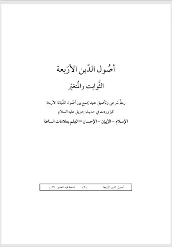

أصول الدين الأربعة
Habib Abu Bakar al-Adni bin Ali al-Masyhur

Ringkasan sudah disetujui pemilik Qira’ah dan tersedia untuk dibaca. Edisi bacaan tematik sekitar 10 menit; tidak menggantikan kitab Arab asli atau telaah setiap riwayat.
*Edisi baca Qira’ah — karya Habib Abu Bakar al-Adni bin Ali al-Masyhur. Bagian yang belum terbaca tidak diisi dengan dugaan.*
Penulis mengusulkan pembacaan Hadis Jibril melalui empat pokok: Islam, iman, ihsan, dan pengetahuan tentang tanda kiamat. Pokok keempat dijadikan pintu bagi disiplin fiqh at-tahawwulāt yang menjadi perhatian khasnya.
Teks awal membedakan amal lahir, keyakinan, kesadaran ruhani, dan pemahaman terhadap perubahan zaman. Pengarang menilai keempatnya perlu dibaca dalam hubungan yang utuh. Ia juga menyinggung cara manusia menyikapi ujian serta pertikaian yang muncul akibat salah menafsirkan tanda zaman.
Kembali ke katalog